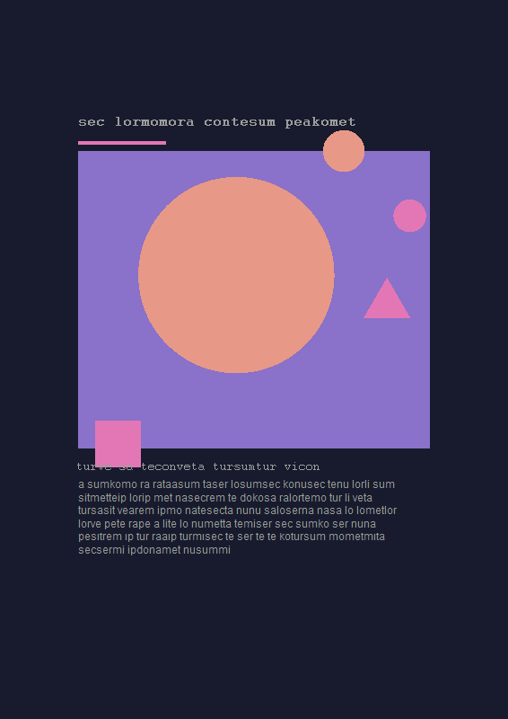
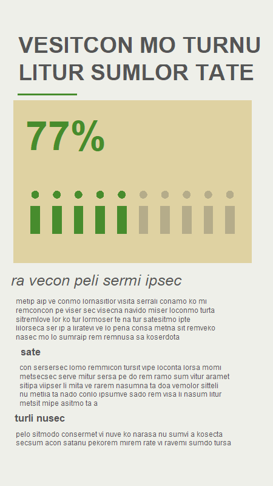
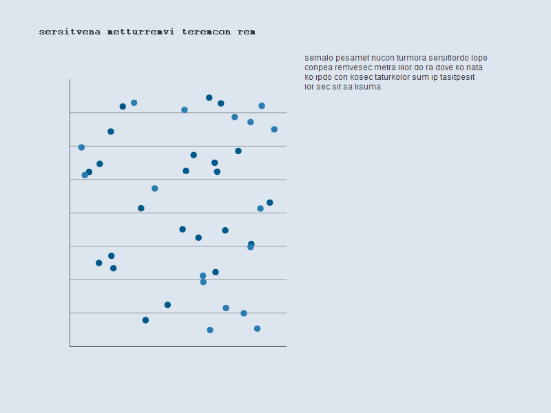
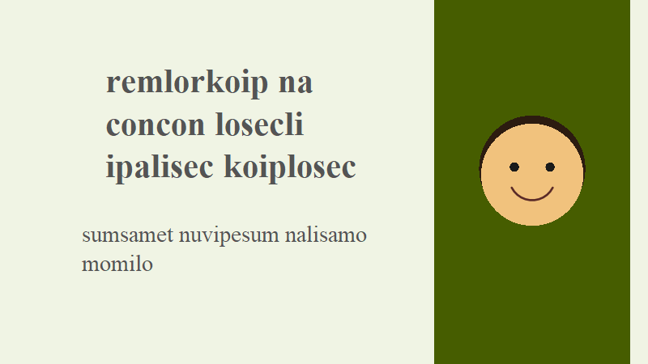
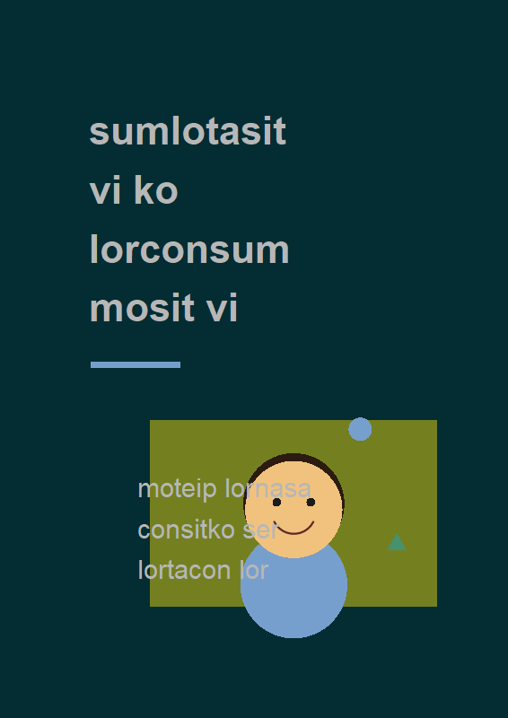
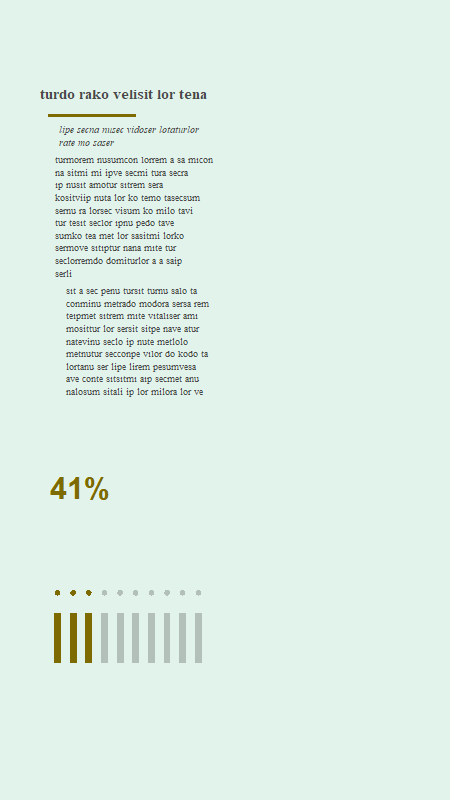
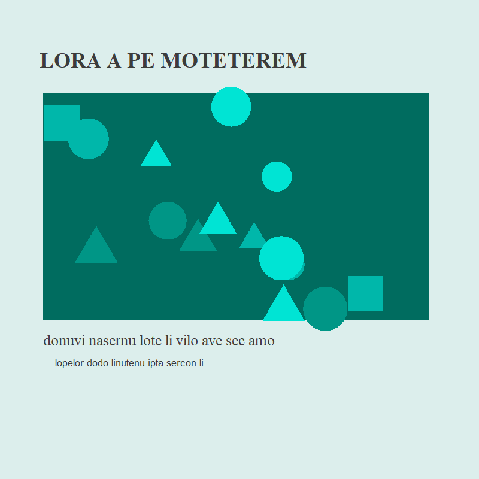
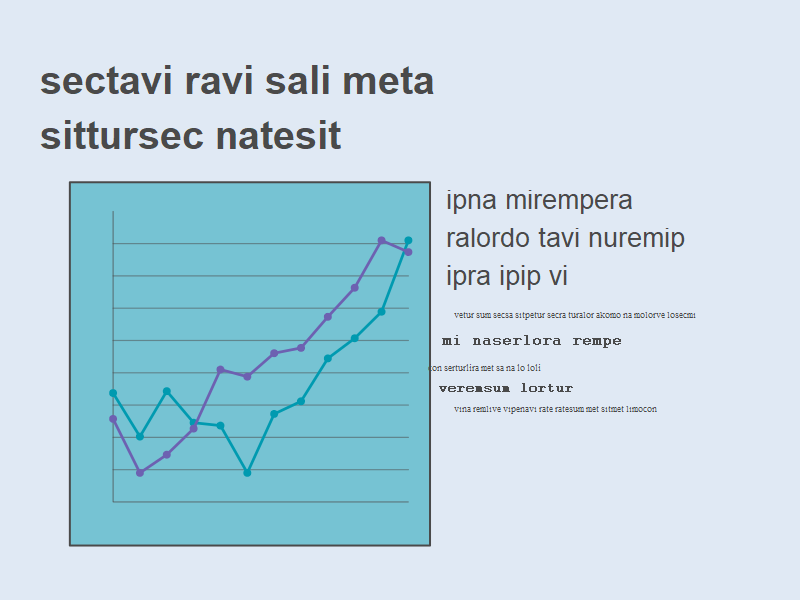
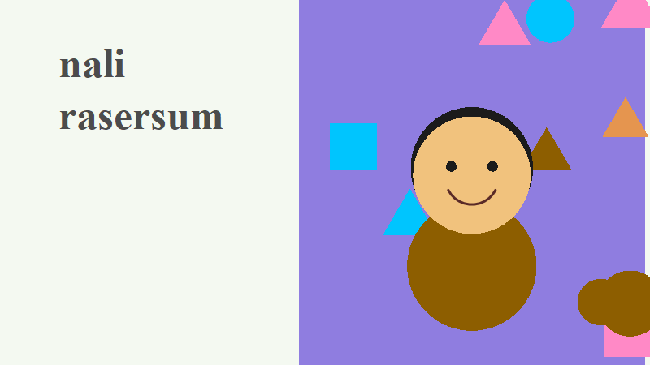

Synthetic data for visual communication
2,000 synthetic designs with their images, 1,000 fictitious participants and 20,000 simulated responses, with every generating effect documented. Teach and test analyses against a known truth, with no privacy risk.
All data are synthetic. They were generated by a documented statistical model with fixed seeds. They do not represent real people, real designs or empirical findings, and must not be cited as evidence about human perception.









Ten of the 2,000 synthetic images. Text is meaningless pseudo-text and faces are schematic; every property is recorded in the tables.
What's inside
A simulated study in which people look at visual designs and respond to them. Three linked tables, one image per design, and the metadata to understand them.
| Table | One row is | Variables |
|---|---|---|
synthetic_designs.csv | a poster, infographic, data chart, social media image or slide | colour palette, harmony and saturation, WCAG text contrast, typefaces, text size, line spacing, layout, alignment, whitespace, hierarchy levels, focal point, image/text ratio, word count, faces, chart type, data-ink ratio, alt text, visual complexity |
synthetic_participants.csv | a fictitious participant | age band, design expertise, visual literacy, colour vision, low vision, device |
synthetic_responses.csv | one participant's response to one design (20 each) | time to first fixation, dwell time, comprehension (0-5), aesthetic and preference ratings (1-7), cognitive load (0-100), recall after 24 hours, engagement |
images/ | one PNG per design | drawn from the design's variables; metadata/images.csv records the colours, rendered contrast and palette actually drawn |
Known truth
Every effect used to simulate the responses is listed in true_effects.csv, so learners can check whether their models recover it.
Images that match the data
Each image is drawn from its row: the text colour is solved to hit the design's exact WCAG contrast, and palette, type, layout and charts follow the variables.
Reproducible
Base R scripts rebuild every file byte for byte from fixed seeds, and 55 checks verify checksums, keys, ranges and effects.
Explore the designs
Filter the 2,000 synthetic designs and open any of them to see its image, its variables, the colours actually drawn and the mean simulated responses.
Download
Everything
The archived release on Zenodo (data, images, metadata, code and examples):
Zenodo · DOI 10.5281/zenodo.23876696
Or clone the repository: git clone https://github.com/pablosancheznunez/synthviscom
Individual files (CSV, UTF-8)
- synthetic_designs.csv (2,000 rows)
- synthetic_participants.csv (1,000 rows)
- synthetic_responses.csv (20,000 rows)
- codebook.csv: every variable explained
- true_effects.csv: the generating effects
- images.csv: the image manifest
- Data descriptor: how every variable was simulated
R
base <- "https://pablosancheznunez.com/synthviscom/data/"
designs <- read.csv(paste0(base, "synthetic_designs.csv"), na.strings = "")
participants <- read.csv(paste0(base, "synthetic_participants.csv"))
responses <- read.csv(paste0(base, "synthetic_responses.csv"))
study <- merge(merge(responses, designs), participants)Python
import pandas as pd
base = "https://pablosancheznunez.com/synthviscom/data/"
designs = pd.read_csv(base + "synthetic_designs.csv")
participants = pd.read_csv(base + "synthetic_participants.csv")
responses = pd.read_csv(base + "synthetic_responses.csv")
study = (responses.merge(designs, on="design_id")
.merge(participants, on="participant_id"))Teach and research with it
The repository includes a getting-started script and a notebook with nine exercises and worked solutions, for courses on visual communication, information design, data visualisation, accessibility and research methods.
Accessibility audit
Which designs fail WCAG contrast, and who is excluded? Comprehension drops below 4.5:1, more for participants with colour vision deficiency or low vision.
Models with a known answer
Fit regressions, ordinal and mixed models and compare them with the true effects; find omitted-variable bias and mediation.
Power by simulation
The generator creates new synthetic studies of any size, so students can see how many participants a real study would need.
Design critique
Compare the images of the best and worst understood designs and explain the difference from the data.
Chart choice
Show contrast effects on a log scale, compare chart types and data-ink ratios.
Image analysis
Estimate contrast, colourfulness or text density from the pixels and check against the recorded values.
Open the teaching exercises · Getting-started script · Generator and renderer
How to cite
Sánchez-Núñez, P. (2026). Synthetic Dataset for Visual Communication Education and Research (SynthVisCom, Version 0.1.0) [Data set]. Zenodo. https://doi.org/10.5281/zenodo.23876696
@dataset{sancheznunez_2026_synthviscom,
author = {Sánchez-Núñez, Pablo},
title = {Synthetic Dataset for Visual Communication Education
and Research (SynthVisCom)},
year = {2026},
version = {0.1.0},
publisher = {Zenodo},
doi = {10.5281/zenodo.23876696},
url = {https://doi.org/10.5281/zenodo.23876696}
}Licences
Data, images, metadata, documentation and this page: CC BY 4.0. Code (generator, renderer, scripts and the explorer on this page): MIT.